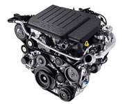
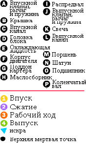
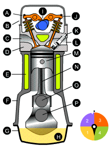

Двигатель внутреннего сгорания(ДВС) – это самый распространенный тип двигателя из всех, которые устанавливаются в настоящее время на автомобили. Несмотря на то, что современный двигатель внутреннего сгорания состоит из тысячи частей, принцип его работы весьма прост. В рамках данной статьи мы рассмотрим устройство и принцип работы ДВС.
В каждом двигателе внутреннего сгорания есть цилиндр и поршень. Именно внутри цилиндра ДВС происходит преобразование тепловой энергии, выделяемой при сжигании топлива, в энергию механическую, способную заставить наш автомобиль двигаться. Этот процесс повторяется с частотой несколько сотен раз в минуту, что обеспечивает непрерывное вращение выходящего из двигателя коленчатого вала.
В подавляющем большинстве легковых автомобилей устанавливают четырехтактные двигатели внутреннего сгорания, поэтому мы и берём его за основу. Чтобы лучше понять принцип устройства бензинового ДВС, предлагаем вам взглянуть на рисунок:
|  | Топливно-воздушная смесь, попадая через впускной клапан в камеру сгорания (такт первый – впуск), сжимается (такт второй – сжатие) и воспламеняется от искры свечи зажигания. При сжигании топлива, под воздействием высокой температуры в цилиндре двигателя образуется избыточное давление, заставляющее поршень двигаться вниз к так называемой нижней мертвой точке (НМТ), совершая при этом такт третий – рабочий ход. Перемещаясь во время рабочего хода вниз, с помощью шатуна, поршень приводит во вращение коленчатый вал. Затем, перемещаясь от НМТ к верхней мертвой точке (ВМТ) поршень выталкивает отработанные газы через выпускной клапан в выхлопную систему автомобиля – это четвертый такт (выпуск) работы двигателя внутреннего сгорания. |
|
Такт – это процесс, происходящий в цилиндре двигателя за один ход поршня. Совокупность тактов, повторяющихся в строгой последовательности и с определенной периодичностью, обычно называют рабочим циклом, в данном случае, двигателя внутреннего сгорания.
Для большей наглядности рекомендуем посмотреть видео, на котором также очень хорошо показан принцип работы ДВС.